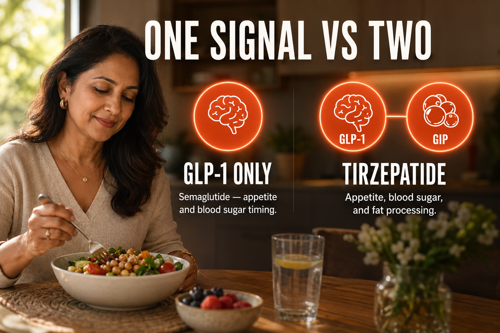

What Tirzepatide Is
Tirzepatide is a synthetic peptide that activates two separate hormone receptors at the same time, GLP-1 and GIP. It belongs to a class of compounds called dual incretin receptor agonists. It is the active compound behind two approved medications: Mounjaro, originally approved for type 2 diabetes, and Zepbound, later approved for chronic weight management, with Zepbound also authorized for obstructive sleep apnea in adults with obesity.
Both Mounjaro and Zepbound contain the exact same active molecule. The difference between them is purely regulatory and commercial, one was approved first for diabetes, the other for weight loss. This matters because it means the underlying compound is the same regardless of which brand name a prescription uses.
Tirzepatide sits between semaglutide and retatrutide in terms of mechanism. Semaglutide activates one receptor, GLP-1. Tirzepatide activates two, GLP-1 and GIP. Retatrutide activates three, GLP-1, GIP, and glucagon. Each additional receptor generally corresponds to a larger average weight loss effect in clinical trials, though individual response varies.
People are interested in tirzepatide because of the combination of strong clinical trial data, FDA approval for two separate indications, and a track record that now spans several years of real-world prescribing. It is the most clinically established of the next-generation incretin compounds, with more published outcome data than retatrutide currently has.
The Plain English Version
Manual Transmission in Traffic vs Automatic
Think about driving a manual transmission car during a stressful commute. You can do it. People do it every day. But every stop light, every hill, every lane change requires you to consciously coordinate the clutch, the gear, and the throttle at the same time. One mis-timed shift and you stall in the middle of an intersection. It is manageable, but it takes constant attention and it is exhausting in a way that automatic driving simply is not.
For a lot of people by their 40s, managing hunger, blood sugar, and energy throughout the day starts to feel like driving manual in heavy traffic. Your body is supposed to handle these things automatically, a hormone tells you when you're full, another hormone helps your pancreas release the right amount of insulin at the right time. But after years of stress, poor sleep, insulin resistance, or just the slow drift that happens with age, that automatic coordination starts to break down. You are doing everything manually and still stalling at the worst moments, the 3pm crash, the late-night snacking, the blood sugar swings.
Tirzepatide works on two of those automatic systems at once. The GLP-1 receptor handles the signal that tells your brain you're full and slows down how fast food leaves your stomach. The GIP receptor works alongside it, helping your body manage insulin response and fat tissue more efficiently. Activating both at the same time is like upgrading from a manual transmission car to an automatic in the middle of that same stressful commute, the background coordination that used to take constant conscious effort starts happening on its own again.
You still have to drive. You still make choices about food and activity. But the parts of the system that were supposed to run quietly in the background, and instead were demanding constant attention, go back to running the way they were designed to.
One sentence: Tirzepatide restores two metabolic functions that should run automatically in the background but had stopped working efficiently on their own.

How It Works
Tirzepatide is a dual GIP/GLP-1 receptor agonist that suppresses appetite by mimicking two gut hormones simultaneously.
The GLP-1 receptor pathway slows gastric emptying, food stays in the stomach longer, extending the feeling of fullness, reduces appetite signals at the level of the brain, and supports more stable insulin release after eating.
The GIP receptor pathway is the second piece that separates tirzepatide from single-agonist compounds like semaglutide. GIP activation appears to improve how the body processes fat tissue and may enhance insulin sensitivity through a pathway distinct from GLP-1 alone. In head-to-head trial data, all three tested doses of tirzepatide outperformed semaglutide on both blood sugar reduction and body weight loss, which researchers attribute to this added GIP activity.
Together, the two pathways produce appetite suppression, improved insulin response, and measurable fat loss working through two separate but complementary mechanisms rather than one mechanism alone.
Documented Benefits
Trial participants on the highest studied dose lost an average of close to 21% of body weight over 72 weeks, substantially more than the placebo group.
A large majority of trial participants with type 2 diabetes achieved healthy blood sugar targets after 40 weeks on tirzepatide, compared to a small minority on placebo.
Head-to-head data against semaglutide showed tirzepatide produced meaningfully greater weight loss at every dose tested.
Approved as an add-on treatment for obstructive sleep apnea in adults with obesity, alongside weight loss benefits.
Commonly reported as one of the most immediately noticeable effects, often within the first few weeks.
Years of FDA-approved prescribing data exist, giving more long-term real-world information than newer triple-agonist compounds.
Dosing Protocol
| Phase | Dose | Frequency | Notes |
|---|---|---|---|
| Starting | 2.5mg | Weekly | Not intended for long-term glycemic control or weight management on its own, used to build tolerance. |
| Step 2 | 5mg | Weekly | Increase after at least 4 weeks at the previous dose, as tolerated. |
| Step 3 | 7.5mg | Weekly | Continue titration only if needed and tolerated. |
| Step 4 | 10mg | Weekly | A common maintenance dose; many people stay here long term. |
| Step 5 | 12.5mg | Weekly | Higher maintenance range. |
| Maximum | 15mg | Weekly | Maximum studied and approved weekly dose. |
This is the FDA-approved titration schedule for the branded medication. Community and research-context dosing generally mirrors this same schedule when working with research-grade material, since the underlying compound and receptor biology are identical. Tirzepatide may be administered at any time of day, with or without food, and a missed dose can typically still be taken within about 4 days before resuming the regular schedule.
How To Reconstitute Tirzepatide
TR30 (30mg vial)
3mL BAC water
10mg per mL
| Your Dose | Units To Draw | Volume |
|---|---|---|
| 2.5mg (starting) | 25 units | 0.25mL |
| 5mg | 50 units | 0.5mL |
| 7.5mg | 75 units | 0.75mL |
| 10mg | 100 units | 1.0mL |
| 12.5mg | 125 units | 1.25mL (use a 1.5mL or larger syringe) |
| 15mg (max) | 150 units | 1.5mL (use a 1.5mL or larger syringe) |
Dosage Build-Up Timeline
Tirzepatide is usually increased slowly. The early weeks are about tolerance, while the later weeks are about deciding whether more appetite suppression is actually needed.
Common Mistakes
It exists to build tolerance, not to produce meaningful weight loss on its own.
Moving up before 4 full weeks at the current dose increases the risk of nausea and GI side effects without added benefit.
Appetite suppression can be strong enough that protein intake drops too low, risking muscle loss alongside fat loss.
This can worsen nausea and blood sugar swings; small consistent meals tend to be better tolerated.
Site rotation reduces local irritation and uneven absorption over time.
They are the same molecule with different approved uses and dosing presentations.
GI side effects combined with reduced food and fluid intake can lead to dehydration, especially during dose increases.
Contraindications And Cautions
Incretin receptor activation has been associated with thyroid C-cell changes in animal studies; this history is a significant caution.
Avoid use.
Discuss with a physician before starting.
Not recommended; discontinue use and consult a physician if pregnancy is suspected or planned.
Including gastroparesis; slowed gastric emptying from tirzepatide can worsen these conditions.
Rapid blood sugar improvement has been associated with temporary worsening in some related compounds; monitor with an eye care provider if this applies.
Avoid use if you have a known allergy to tirzepatide or its components.
Combination may increase the risk of low blood sugar; medical guidance is important if currently on these medications.
This is not a complete list. Anyone with a significant medical history, particularly involving the thyroid, pancreas, or digestive system, should speak with a qualified healthcare professional before starting.
What To Track
- Body weight, weekly, same day and conditions, for consistency.
- Waist circumference, monthly.
- Fasting glucose and HbA1c, particularly relevant for anyone with insulin resistance or diabetes history.
- Resting heart rate, note any significant changes.
- Hydration and GI symptoms, nausea, diarrhea, constipation, especially around dose increases.
- Energy levels, subjective 1-10 weekly.
- Protein intake, daily, to guard against muscle loss during appetite suppression.
- Mood and food relationship, subjective, since appetite suppression affects eating behavior broadly.
Stacks Well With
- NAD+, supports cellular energy independent of the appetite and metabolic pathways tirzepatide affects.
- KLOW, addresses inflammation and tissue repair through a separate recovery-focused mechanism.
- CJC-1295 + Ipamorelin, some protocols add growth-hormone support to help preserve lean mass during weight loss.
- MOTS-c, improves insulin sensitivity and mitochondrial efficiency through the AMPK pathway, a separate mechanism from incretin receptor activation.